rm(list=ls())
set.seed(1909)Simulating the mother groups DGP
1 Goal
The goal is to simulate a data generating process (DGP) mimicking the mother group assignment in Denmark. It is used to understand the role of fixed effects and the role of exclusion bias.
2 Preparation
We set seed, clear the workspace and load libraries.
Set seed
Load libriaries
library(ggplot2) # To create charts
library(patchwork) # To mix charts
library(dplyr) # Data manipulation tools
library(lubridate) # Date manipulation tools
library(fixest) # Estimation
library(data.table) # Data manipulation tools
library(modelsummary) # Create tables
library(lmtest) # Hypotheses testing3 The Data Generating Process (DGP)
3.1 Defining the DGP
We here create a function that simulates a dataset mimicking the DGP we have in mind. The key features we focus on are
The role of unobservables (in group assignments and outcomes)
The assignment mechanism
The peer effects
Re 1.: We assume there is an individual unobservable \(U\) that is a combination of a unique individual effect and a district level effect. This unobservable affects variables like labor supply, income, parental labor supply and age. But not parity and child dob.
Re 2.: The assignment is only strict based on district. THat is, within each district, nurses sort the mothers by
Child date of birth (days)
Mother age (integers)
Parity (binary)
We add a bit of noise to the sorting to mimick the real world where there will be errors, mothers coming in during the process etc. The nurse then simply starts filling mother groups by counting to five. That is, we restrict mother groups to the size of 5.
Re 3.: True peer effects are tricky to simulate. Here we cheat a bit by ignoring the multiplication effect/reflect effect. That is we:
Define a latent level of mother labor supply depending on grand parent labor supply, the unobservables, etc.
Calculate the mother group leave one out average latent labor supply.
Calculate the actual labour supply by adding the peer effect to the latent effect.
That is it for now.
Code
DGP_fast <- function(n = 70000, n_districts = 500) {
# District identifier
id_district <- sample(1:n_districts, n, replace = TRUE)
# District unobserved effect
district_effect <- rnorm(n_districts, mean = 0, sd = 1)
# Individual unobserved effect
U <- district_effect[id_district] + rnorm(n)
# Covariates, note that parity and dob are unrelated to u, age, education, income, gm labour supply are not
x_age <- round(18 + 10 * runif(n) + 2 * U + rnorm(n)) # now depends on U
x_age <- pmax(pmin(x_age, 40), 18) # keep age between 18 and 40
x_parity <- sample(1:2, n, replace = TRUE)
x_schooling <- round(9 + 0.2 * x_age + 0.8 * U + rnorm(n))
x_income <- round(200000 + 5000 * x_schooling + 10000 * U + rnorm(n, 0, 20000))
x_gm_lsupply <- pmax(0, 20 + 0.5 * U + rnorm(n, 0, 5))
x_dob <- sample(seq(as.Date("2010-01-01"), as.Date("2017-12-31"), by = "day"), n, replace = TRUE)
# Create data frame
dt <- data.table(id_mother = 1:n, id_district, x_age, x_parity,
x_schooling, x_income, x_gm_lsupply, x_dob)
# Assign mother groups
setorder(dt, id_district, x_dob, x_age,x_parity)
dt[, order_original := .I , by = id_district]
# Add small random noise to row numbers
dt[, order_noisy := .I + rnorm(.N, mean = 0, sd = 1)]
# Sort by the noisy key
setorder(dt, id_district,order_noisy)
dt[, order_noisy := .I , by = id_district]
# Assign groups
dt[, count := 1:.N, by = id_district]
dt[, group_id := floor((count - 1) / 5)]
dt[, id_mother_group := paste(id_district, group_id, sep = "_")]
# Create fixed effects
dt[, x_quarter := lubridate::quarter(x_dob, with_year = TRUE)]
dt[, x_month := lubridate::month(x_dob)]
dt[, x_year := lubridate::year(x_dob)]
dt[, x_young := as.integer(x_age < 30)]
dt[, x_age5 := floor(x_age/5)*5]
# Leave-one-out variables
dt[, `:=`(
sum_schooling = sum(x_schooling),
sum_income = sum(x_income),
sum_gm=sum(x_gm_lsupply),
n_group = .N
), by = id_mother_group]
dt[, x_schooling_g := (sum_schooling - x_schooling) / (n_group - 1)]
dt[, x_income_g := (sum_income - x_income) / (n_group - 1)]
dt[, x_gm_lsupply_g := (sum_gm - x_gm_lsupply) / (n_group - 1)]
# Create labor supply (our main outcome)
# Initial (baseline) labor supply without peer effect
dt[, lsupply_base := pmin(40, pmax(0,
20 + # base level
0.5 * U + # unobserved factor
0.3 * x_gm_lsupply + # grandmother's influence
rnorm(.N, 0, 5) # noise
))]
# Leave-one-out peer effect within mother group
dt[, `:=`(
sum_lsupply = sum(lsupply_base),
n_group = .N
), by = id_mother_group]
dt[, x_lsupply_g := (sum_lsupply - lsupply_base) / (n_group - 1)]
# Final labor supply including peer effect
dt[, y_lsupply := pmin(40, pmax(0,
lsupply_base +
0.2 * x_lsupply_g # peer effect coefficient
))]
# Keep only relevant columns
dt<-dt[, .SD, .SDcols = grep("^id_|^x_|^gm_|^y_", names(dt), value = TRUE)]
return(dt)
}3.2 Showing the DGP
3.2.1 The group assignments
Let us have a look at the data generated by the DGP function defined above. We first focus on the group assignments. The variables are sorted so that without noise they should be perfectly assigned to groups. The group assignment mostly follows this sorting, but with some discrepancies. This seems realistic.
Code
df<-DGP_fast()
setorder(df, id_district, x_parity, x_dob, x_age)
head(df[, .SD, .SDcols = c("id_district","id_district", "x_dob", "x_age","x_parity", "id_mother_group","y_lsupply")],n=20) id_district id_district x_dob x_age x_parity id_mother_group y_lsupply
<int> <int> <Date> <num> <int> <char> <num>
1: 1 1 2010-01-13 18 1 1_0 40.00000
2: 1 1 2010-01-18 18 1 1_0 28.31111
3: 1 1 2010-02-08 23 1 1_0 36.56377
4: 1 1 2010-02-25 22 1 1_0 30.42646
5: 1 1 2010-04-01 28 1 1_0 40.00000
6: 1 1 2010-04-24 21 1 1_1 15.79075
7: 1 1 2010-08-14 20 1 1_2 26.12610
8: 1 1 2010-09-06 20 1 1_2 40.00000
9: 1 1 2010-10-12 19 1 1_2 30.13255
10: 1 1 2010-11-12 21 1 1_3 28.43505
11: 1 1 2011-01-22 28 1 1_3 35.59621
12: 1 1 2011-02-10 24 1 1_3 22.32589
13: 1 1 2011-04-04 19 1 1_4 31.18930
14: 1 1 2011-05-04 18 1 1_5 25.77552
15: 1 1 2011-06-07 30 1 1_5 34.96100
16: 1 1 2011-07-17 20 1 1_4 24.84820
17: 1 1 2011-09-01 25 1 1_6 17.03290
18: 1 1 2011-09-02 28 1 1_5 27.45957
19: 1 1 2011-09-14 26 1 1_6 36.93712
20: 1 1 2011-09-20 27 1 1_6 29.85149
id_district id_district x_dob x_age x_parity id_mother_group y_lsupply3.2.2 The “first” stage
We can look at many aspects of the data, but as a starter, let us have a look at the link between grand mother labor supply and own labor supply. This looks as expected (but I am puzzled about the NAs, anyway).
Code
# Collapse data
df_collapsed<-df%>%
mutate(x_gm_lsupply_round=round(x_gm_lsupply))%>% # Round grand mother labor supply
group_by(x_gm_lsupply_round)%>% # Group by the rounded labor supply
summarize(y_lsupply=mean(y_lsupply,na.rm = T)) # Collapsed
# Create plot
ggplot(df_collapsed,aes(x=x_gm_lsupply_round,y=y_lsupply))+
geom_point()+
theme_minimal()
3.2.3 Summary stats
Finally, let us have a look at some summary stats. There are some variables that could be better defined, but overall it looks fine.
Code
datasummary_skim(df)| Unique | Missing Pct. | Mean | SD | Min | Median | Max | Histogram | |
|---|---|---|---|---|---|---|---|---|
| id_mother | 70000 | 0 | 35000.5 | 20207.4 | 1.0 | 35000.5 | 70000.0 | |
| id_district | 500 | 0 | 249.8 | 144.6 | 1.0 | 250.0 | 500.0 | |
| x_age | 22 | 0 | 23.2 | 3.7 | 18.0 | 23.0 | 40.0 | 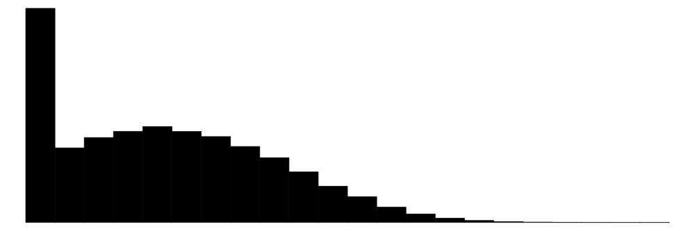 |
| x_parity | 2 | 0 | 1.5 | 0.5 | 1.0 | 1.0 | 2.0 | 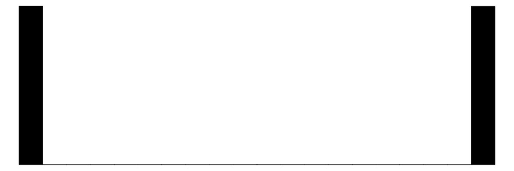 |
| x_schooling | 17 | 0 | 13.6 | 2.0 | 6.0 | 14.0 | 22.0 | 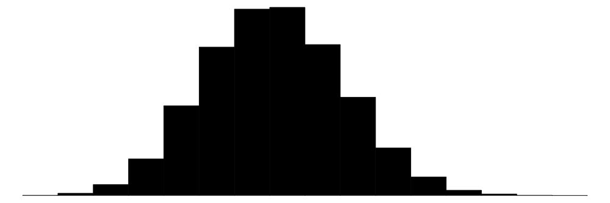 |
| x_income | 51792 | 0 | 268058.0 | 30080.7 | 137787.0 | 267802.0 | 388663.0 | 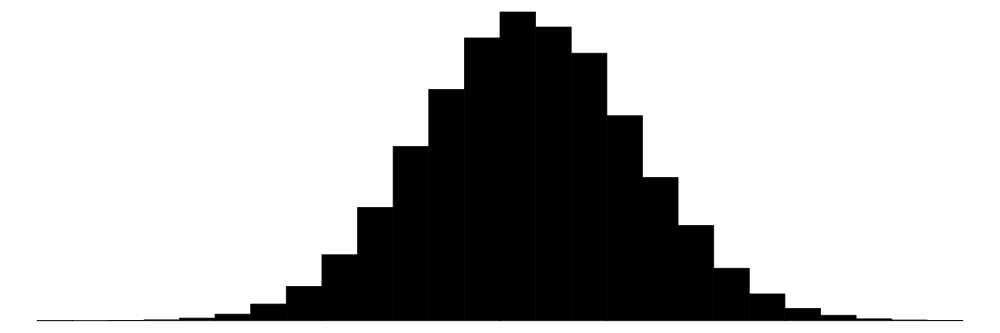 |
| x_gm_lsupply | 69996 | 0 | 20.0 | 5.0 | 0.0 | 20.0 | 44.9 | 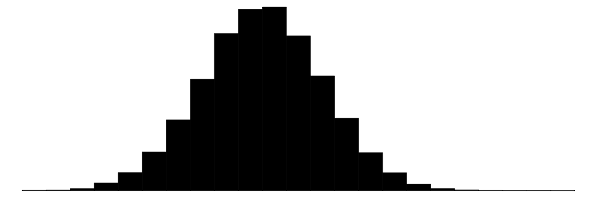 |
| x_quarter | 32 | 0 | 2013.8 | 2.3 | 2010.1 | 2014.1 | 2017.4 | |
| x_month | 12 | 0 | 6.5 | 3.5 | 1.0 | 7.0 | 12.0 | 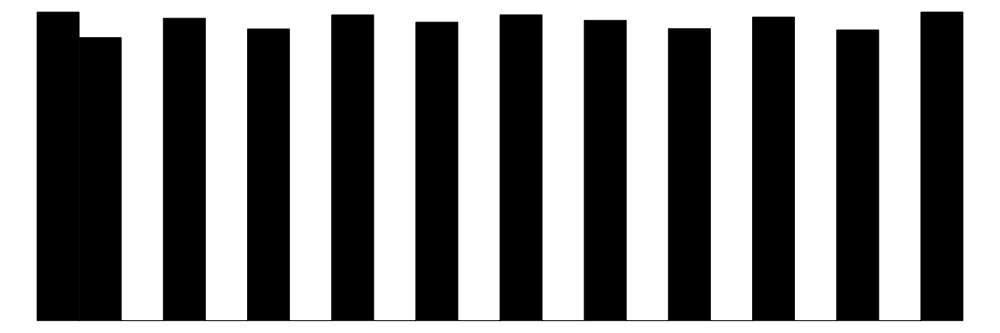 |
| x_year | 8 | 0 | 2013.5 | 2.3 | 2010.0 | 2014.0 | 2017.0 | 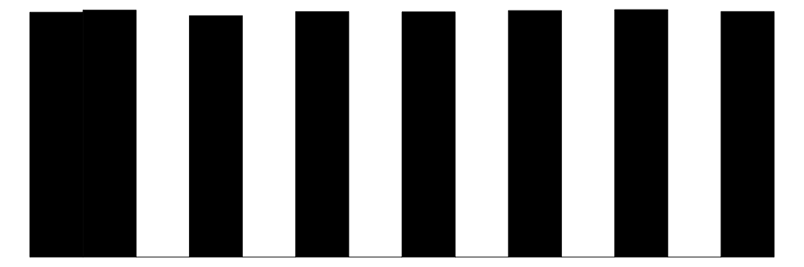 |
| x_young | 2 | 0 | 0.9 | 0.2 | 0.0 | 1.0 | 1.0 | 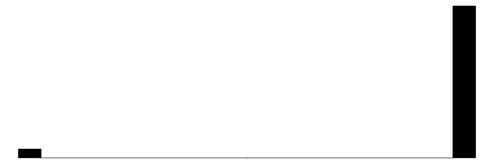 |
| x_age5 | 6 | 0 | 21.0 | 4.2 | 15.0 | 20.0 | 40.0 | 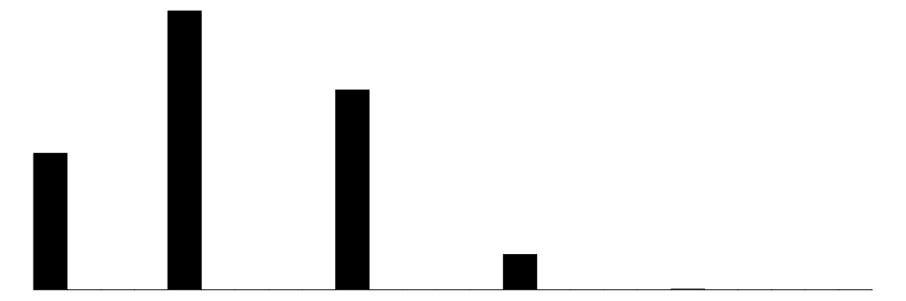 |
| x_schooling_g | 59 | 0 | 13.6 | 1.4 | 8.5 | 13.5 | 19.2 | 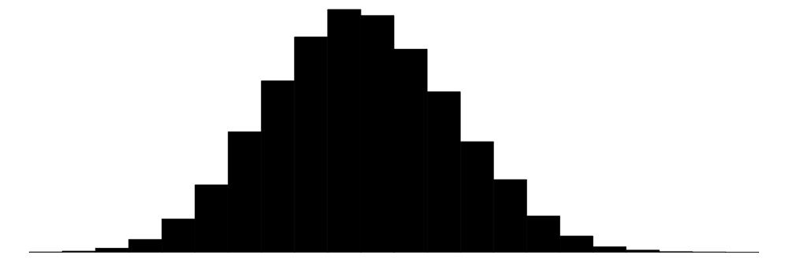 |
| x_income_g | 62282 | 0 | 268056.3 | 19947.6 | 184682.5 | 267960.1 | 365192.0 | 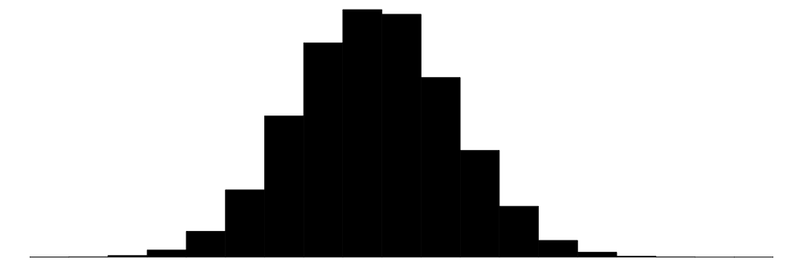 |
| x_gm_lsupply_g | 69907 | 0 | 20.0 | 2.6 | 7.6 | 20.0 | 30.3 | 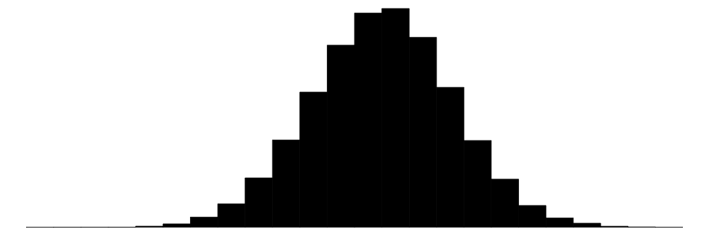 |
| x_lsupply_g | 69903 | 0 | 26.0 | 2.6 | 11.3 | 26.0 | 39.2 | 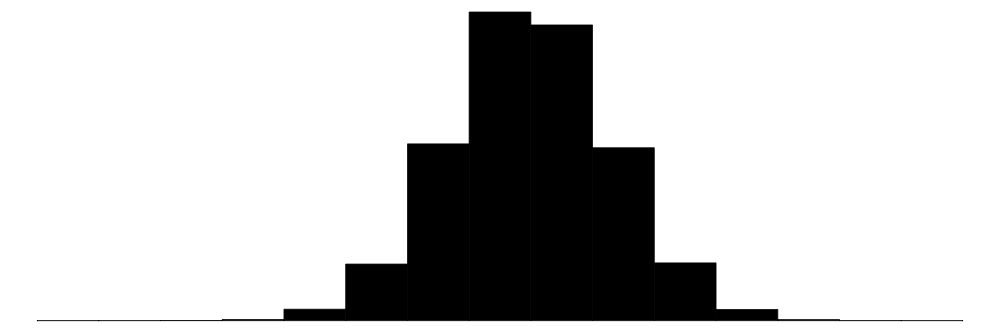 |
| y_lsupply | 66604 | 0 | 31.1 | 5.1 | 10.2 | 31.2 | 40.0 | 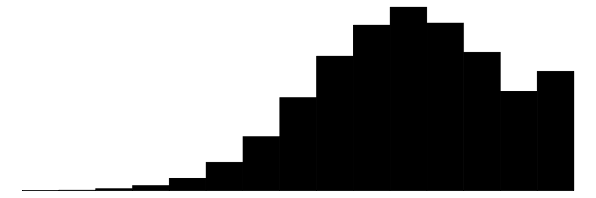 |
4 Check for balance
4.1 The traditional balance check.
We want to know whether group peers are as-good-as-random assignment. Our key variable is labour supply. So let us check whether the average grand mother labour supply is related to our own mother’s labour supply. It should not be (once we adjust for assignment to group variables). We run three regressions
Own grandmother labor supply on average peer grand mother labor supply
Own grandmother labor supply on average peer grand mother labor supply, conditional on district and mother age fixed effects.
Own grandmother labor supply on average peer grand mother labor supply, conditional on district, mother age, child quarter of birth and parity fixed effects.
Code
m1<-feols(x_gm_lsupply~x_gm_lsupply_g,data=df)
m2<-feols(x_gm_lsupply~x_gm_lsupply_g|id_district+x_age5,data=df)
m3<-feols(x_gm_lsupply~x_gm_lsupply_g|id_district+x_age5+x_quarter+x_parity,data=df)
modelsummary(list(m1,m2,m3),
coef_omit = "Intercept",
stars = TRUE)| (1) | (2) | (3) | |
|---|---|---|---|
| + p < 0.1, * p < 0.05, ** p < 0.01, *** p < 0.001 | |||
| x_gm_lsupply_g | 0.038*** | -0.023+ | -0.023* |
| (0.007) | (0.012) | (0.012) | |
| Num.Obs. | 69906 | 69906 | 69906 |
| R2 | 0.000 | 0.018 | 0.019 |
| R2 Adj. | 0.000 | 0.011 | 0.011 |
| R2 Within | 0.000 | 0.000 | |
| R2 Within Adj. | 0.000 | 0.000 | |
| AIC | 424759.7 | 424506.1 | 424534.8 |
| BIC | 424778.0 | 429138.5 | 429460.1 |
| RMSE | 5.05 | 5.00 | 5.00 |
| Std.Errors | IID | by: id_district | by: id_district |
| FE: id_district | X | X | |
| FE: x_age5 | X | X | |
| FE: x_quarter | X | ||
| FE: x_parity | X | ||
We observe
In the raw specification (column (1)), there is a significant positive corellation, as we would expect.
Once we condition on fixed effects the correlation becomes negative and significant. This is also what we would expect, given the exclusion bias issue. And remember in this case we know that assignment is only based on the variables we condition on!
4.2 An alternative approach: check distribution of p-values!
We now test the use of an alternative approach, where we check whether mother group indicators can predict mother groups within the cells where the assignment is done. So basically the idea is that once we only look with a district at similar aged mothers, similar parity and similar child dob, the exact group you get assigned to should be random. Therefore, running a regression of own characteristics on indicators for mother groups, the p-value on the joint F-test for the hypothesis that all indicators could be excluded should be uniformly distributed.
4.2.1 By district only
First we assume that the assignment cell is district We first loop over cells and districts and run all possible regressions and save the p-values.
Code
# datafarme to save results
df_results<-data.table(id_district=rep(unique(df$id_district),times=4),
p=NA,
var=rep(c("x_schooling","x_income","x_age", "x_gm_lsupply", "x_parity"),each=length(rep(unique(df$id_district))))
)
# Loop over variables
for (v in c("x_schooling","x_income","x_age", "x_gm_lsupply", "x_parity")){
# Loop over all districts:
for (i in unique(df$id_district)){
# select sample
filtered_df <- df[df$id_district== i, ]
# Model without fixed effects
mod1 <- feols(as.formula(paste(v, "~ 1")), data = filtered_df)
# Model with fixed effects
mod2 <- feols(as.formula(paste(v, "~ 1 | id_mother_group")), data = filtered_df)
# Get residual sum of squares
rss1 <- sum(resid(mod1)^2)
rss2 <- sum(resid(mod2)^2)
# Get degrees of freedom
df1 <- df.residual(mod1)
df2 <- df.residual(mod2)
# Compute F-statistic
num_df <- df1 - df2 # numerator degrees of freedom (number of added params)
den_df <- df2 # denominator degrees of freedom
f_stat <- ((rss1 - rss2) / num_df) / (rss2 / den_df)
# Compute p-value
pval <- pf(f_stat, df1 - df2, df2, lower.tail = FALSE)
# Store results
df_results$p[df_results$id_district == i & df_results$var == v] <- pval
}
print(v)
}[1] "x_schooling"
[1] "x_income"
[1] "x_age"
[1] "x_gm_lsupply"
[1] "x_parity"As we now have the data, we can look at plots of the p-values
Code
# Sort by var and p
setorder(df_results, var, p)
# Compute relative rank within each var group
df_results[, relrank := rank(p, ties.method = "first") / .N, by = var]
# Plot
vis1<-ggplot(df_results, aes(x = relrank, y = p, color = var)) +
geom_segment(aes(x = 0, xend = 1, y = 0, yend =1),color="black")+
geom_line() +
labs(x = "Relative Rank", y = "p-value", color = "Variable") +
theme_minimal()+
labs(title="(a) assignment by district")+
theme(legend.position = "top")
vis1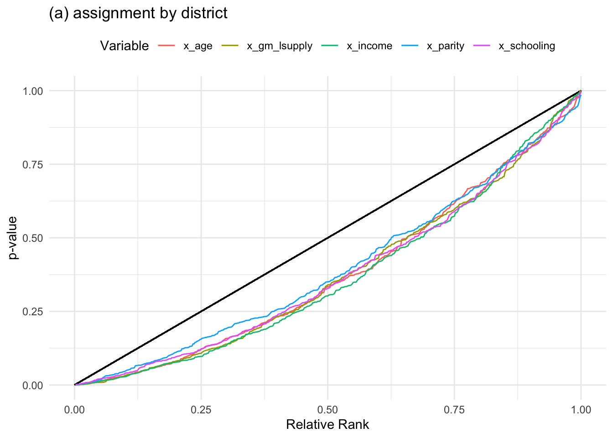
If the p-values are uniformly distributed all lines should be 45 degree lines. They are clearly not.
4.2.2 By district and age
We now repeat the exercise by age and district groups
Code
df[, group := .GRP, by = .(id_district,x_age5)]
# datafarme to save results
df_results<-data.table(group=rep(unique(df$group),times=5),
p=NA,
var=rep(c("x_schooling","x_income","x_age", "x_gm_lsupply","x", "x_parity"),each=length(rep(unique(df$group))))
)
# Loop over variables
for (v in c("x_schooling","x_income","x_age", "x_gm_lsupply")){
# Loop over all districts:
for (i in unique(df$group)){
# select sample
filtered_df <- df[df$group== i, ]
# Skip if the variable is constant or NA
y <- filtered_df[[v]]
if (length(unique(filtered_df$id_mother_group)) <10) next
if (length(unique(y[!is.na(y)])) <= 1) next # Skip constant or all-NA
# Model without fixed effects
mod1 <- lm(as.formula(paste(v, "~ 1")), data = filtered_df)
# Model with fixed effects
mod2 <- lm(as.formula(paste(v, "~ factor(id_mother_group)")), data = filtered_df)
# Compare models
# Get residual sum of squares
rss1 <- sum(resid(mod1)^2)
rss2 <- sum(resid(mod2)^2)
# Get degrees of freedom
df1 <- df.residual(mod1)
df2 <- df.residual(mod2)
# Compute F-statistic
num_df <- df1 - df2 # numerator degrees of freedom (number of added params)
den_df <- df2 # denominator degrees of freedom
f_stat <- ((rss1 - rss2) / num_df) / (rss2 / den_df)
# Compute p-value
pval <- pf(f_stat, df1 - df2, df2, lower.tail = FALSE)
# Store results
df_results$p[df_results$group == i & df_results$var == v] <- pval
}
print(v)
}[1] "x_schooling"
[1] "x_income"
[1] "x_age"
[1] "x_gm_lsupply"We now create a plot, like before:
Code
# Remove rows with NA in p
df_results <- df_results[!is.na(p)]
# Sort by var and p
setorder(df_results, var, p)
# Compute relative rank within each var group
df_results[, relrank := rank(p, ties.method = "first") / .N, by = var]
# Plot
vis2<-ggplot(df_results, aes(x = relrank, y = p, color = var)) +
geom_line() +
labs(x = "Relative Rank", y = "p-value", color = "Variable") +
theme_minimal()+
xlim(0,1)+ylim(0,1)+
labs(title="(b) assignment by district & age5")+
theme(legend.position = "top")
vis2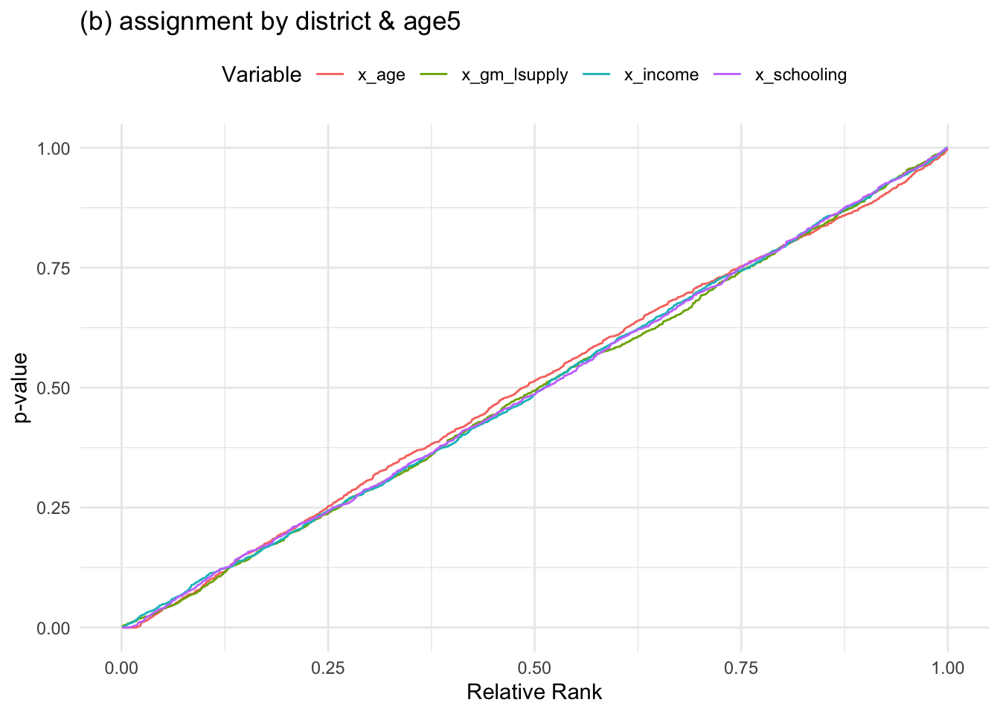
And now it is perfectly blanced. Great! This suggests that it is fairly balanced condition on age and district, but we need to solve the exclusion bias issue.
5 Solving the exclusion bias issue
5.1 Illustrating that the problem is real
We only showed that in one regression, the coefficient on average peer grandmother labor supply becomes significantly negative, when we condition on district and age5. But this could just be random chance. Naturally, because we generate the data we could also just simulate N DGPs and show that this is not just by chance, but we cannot translate that assessment to the real data. To illustrate the problem more clearly, we therefore instead randomly reshuffle the mother groups and repeat the regression. In that regression the correlation should be 0 because we reshuffled and we can also do that on the real data.
Code
#Iterations
I=10000
# Dataset
df_sim<-data.frame(i=1:I,beta=NA,type="Raw")
for (i in 1:I){
# random order
df[, random :=rnorm(.N, mean = 0, sd = 1)]
# reorder
setorder(df, id_district, x_age5,random)
# Assign groups
df[, count := 1:.N, by = id_district]
df[, group_id := floor((count - 1) / 5)]
df[, id_mother_group_new := paste(id_district, group_id, sep = "_")]
# Recalculate leave one out mean
df[, `:=`(
sum_gm=sum(x_gm_lsupply),
n_group = .N
), by = id_mother_group_new]
df[, x_gm_lsupply_gshuffle := (sum_gm - x_gm_lsupply) / (n_group - 1)]
# Save estimate
res<-feols(x_gm_lsupply~x_gm_lsupply_gshuffle|id_district+x_age5,data=df,notes=FALSE)
# Extract coefficient
beta <- summary(res)$coeftable["x_gm_lsupply_gshuffle", "Estimate"]
# Store beta-value in results dataset
df_sim$beta[i] <- beta
# Print
if (i%%50==0){
# cat(paste(i,"\n"))
}
else{
# cat("*")
}
}Let is show the distribution in a chart.
Code
# Store main
main<-feols(x_gm_lsupply~x_gm_lsupply_g|id_district+x_age5,data=df)
beta <- summary(main)$coeftable["x_gm_lsupply_g", "Estimate"]
fig1<-ggplot(df_sim,aes(x=beta))+geom_histogram(color="black",fill="white") +
theme_minimal()+geom_vline(xintercept = 0)+xlim(-0.1,0.1)+labs(title="(a) raw")
fig1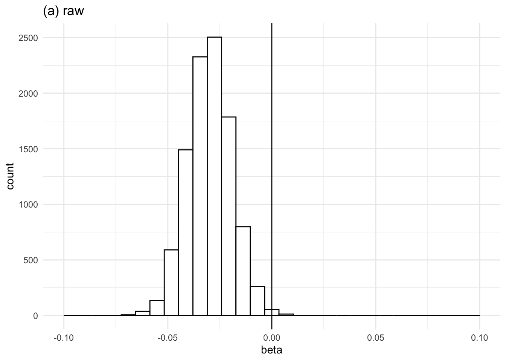
The distribution is clearly not centered around 0, as we would expect!
5.2 Approach 1: control for pool level
The first approach uses the idea of controlling for the pool level. We simply control for leave one out average of grandmother labor supply in the entire district. One could also do it by district and age, but let us start by district.
Code
#Iterations
I=10000
# Dataset
df_sim_pool<-data.frame(i=1:I,beta=NA,type="Raw")
# Calculate pool level leave one out mean
df[, group := .GRP, by = .(id_district)]
df[, `:=`(
sum_gm=sum(x_gm_lsupply),
n_group = .N
), by = group]
df[, x_gm_lsupply_da := (sum_gm - x_gm_lsupply) / (n_group - 1)]
for (i in 1:I){
# random order
df[, random :=rnorm(.N, mean = 0, sd = 1)]
# reorder
setorder(df, id_district, x_age5,random)
# Assign groups
df[, count := 1:.N, by = id_district]
df[, group_id := floor((count - 1) / 5)]
df[, id_mother_group_new := paste(id_district, group_id, sep = "_")]
# Recalculate leave one out mean
df[, `:=`(
sum_gm=sum(x_gm_lsupply),
n_group = .N
), by = id_mother_group_new]
df[, x_gm_lsupply_gshuffle := (sum_gm - x_gm_lsupply) / (n_group - 1)]
# Save estimate
res<-feols(x_gm_lsupply~x_gm_lsupply_gshuffle+x_gm_lsupply_da|id_district+x_age5,data=df,notes=FALSE)
# Extract coefficient
beta <- summary(res)$coeftable["x_gm_lsupply_gshuffle", "Estimate"]
# Store beta-value in results dataset
df_sim_pool$beta[i] <- beta
# Print
if (i%%50==0){
# cat(paste(i,"\n"))
}
else{
# cat("*")
}
}Let us
Code
fig2<-ggplot(df_sim_pool,aes(x=beta))+geom_histogram(color="black",fill="white") +
theme_minimal()+geom_vline(xintercept = 0)+labs(title="(b) control for pool level")+
xlim(-0.025,0.025)
fig1+fig2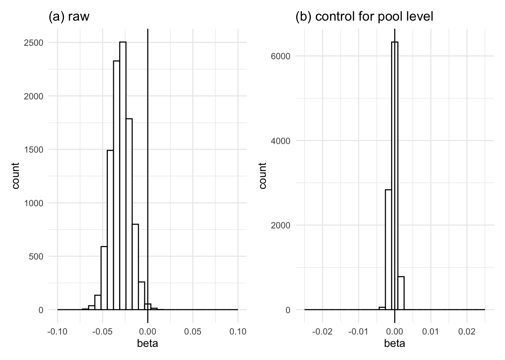
This clearly centers the distribution around 0! Great. That solution works.
5.3 Approach 2: recenter variable based on adding variation in date of birth
Let us know try the recentering approach. We could simply recenter by subtracting the pool level leave one out from the mother group leave one out. That should result in the same as above. However, we will know be more explicit about the pool level and instead simulate pools based on the mother groups you could be assigned to, by adding a bit of noise to the date of birth.
Code
# Dataset for results
df_sim_recent<-data.frame(i=1:I,beta=NA,type="Raw")
I=1000
for (i in 1:I){
# calculate random
J=20
df_test<-df
# Empty data table to store results
df_permute<-data.table(id_mother=rep(df_test$id_mother,times=I),
iteration=rep(1:I,each=length(df_test$id_mother),
beta=NA)
)
setorder(df_test, id_mother)
for (j in 1:J){
# New data of birth
df_test[, x_dob_new := x_dob + round(runif(.N, min = -14, max = 14))]
# Assign mother groups
setorder(df_test, id_district, x_dob_new, x_age,x_parity)
# Assign groups
df_test[, count := 1:.N, by = id_district]
df_test[, group_id := floor((count - 1) / 5)]
df_test[, id_mother_group_new := paste(id_district, group_id, sep = "_")]
# Recalculate leave one out mean
df_test[, `:=`(
sum_gm=sum(x_gm_lsupply),
n_group = .N
), by = id_mother_group_new]
df_test[, x_gm_lsupply_gs := (sum_gm - x_gm_lsupply) / (n_group - 1)]
# Save
setorder(df, id_mother)
df_permute$beta[df_permute$iteration == j ] <- df_test$x_gm_lsupply_gs
}
df_collapsed <- df_permute[, .(x_gm_lsupply_gsim14 = mean(beta, na.rm = TRUE)), by = id_mother]
# now merge on
df<-merge(df,df_collapsed,by="id_mother")
df[,x_gm_lsupply_grc :=x_gm_lsupply_g-x_gm_lsupply_gsim14 ]
# Save estimate
res<-feols(x_gm_lsupply~x_gm_lsupply_grc|id_district+x_age5,data=df,notes=FALSE)
# Extract coefficient
beta <- summary(res)$coeftable["x_gm_lsupply_grc", "Estimate"]
# Store beta-value in results dataset
df_sim_recent$beta[i] <- beta
# Print
if (i%%50==0){
# cat(paste(i,"\n"))
}
else{
# cat("*")
}
df<-df%>%select(-x_gm_lsupply_gsim14)
}Let us again create a histogram and compare it to the other histograms
Code
fig3<-ggplot(df_sim_recent,aes(x=beta))+geom_histogram(color="black",fill="white") +
theme_minimal()+geom_vline(xintercept = 0)+labs(title="(c) recenter w. dob 14d")+
xlim(-0.025,0.025)
fig1+fig2+fig3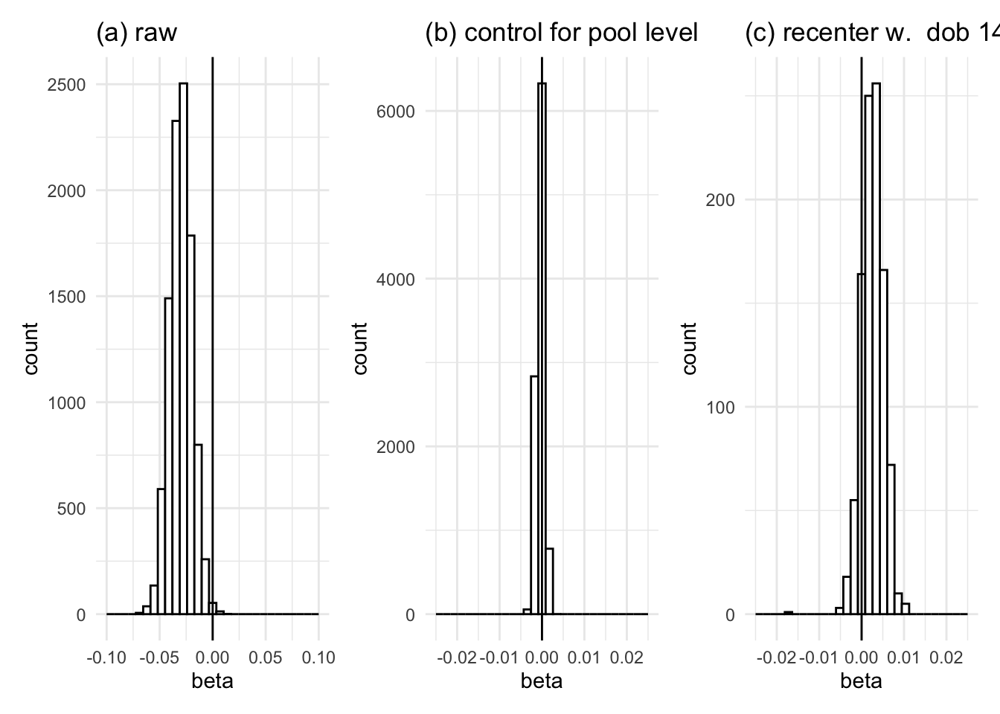
This is not as narrow as (b), and worse, it is not centered. Can we do better?
5.4 Approach 3: a more generous recentering based on adding variation in date of birth
Let us know try the recentering approach. We could simply recenter by subtracting the pool level leave one out from the mother group leave one out. That should result in the same as above. However, we will know be more explicit about the pool level and instead simulate pools based on the mother groups you could be assigned to, by adding a bit of noise to the date of birth.
Code
# Dataset for results
df_sim_recent<-data.frame(i=1:I,beta=NA,type="Raw")
I=1000
for (i in 1:I){
# calculate random
J=20
df_test<-df
# Empty data table to store results
df_permute<-data.table(id_mother=rep(df_test$id_mother,times=I),
iteration=rep(1:I,each=length(df_test$id_mother),
beta=NA)
)
setorder(df_test, id_mother)
for (j in 1:J){
# New data of birth
df_test[, x_dob_new := x_dob + round(runif(.N, min = -90, max = 90))]
# Assign mother groups
setorder(df_test, id_district, x_dob_new, x_age,x_parity)
# Assign groups
df_test[, count := 1:.N, by = id_district]
df_test[, group_id := floor((count - 1) / 5)]
df_test[, id_mother_group_new := paste(id_district, group_id, sep = "_")]
# Recalculate leave one out mean
df_test[, `:=`(
sum_gm=sum(x_gm_lsupply),
n_group = .N
), by = id_mother_group_new]
df_test[, x_gm_lsupply_gs := (sum_gm - x_gm_lsupply) / (n_group - 1)]
# Save
setorder(df, id_mother)
df_permute$beta[df_permute$iteration == j ] <- df_test$x_gm_lsupply_gs
}
df_collapsed <- df_permute[, .(x_gm_lsupply_gsim90 = mean(beta, na.rm = TRUE)), by = id_mother]
# now merge on
df<-merge(df,df_collapsed,by="id_mother")
df[,x_gm_lsupply_grc :=x_gm_lsupply_g-x_gm_lsupply_gsim90 ]
# Save estimate
res<-feols(x_gm_lsupply~x_gm_lsupply_grc|id_district+x_age5,data=df,notes=FALSE)
# Extract coefficient
beta <- summary(res)$coeftable["x_gm_lsupply_grc", "Estimate"]
# Store beta-value in results dataset
df_sim_recent$beta[i] <- beta
# Print
if (i%%50==0){
# cat(paste(i,"\n"))
}
else{
# cat("*")
}
df<-df%>%select(-x_gm_lsupply_gsim90)
}Let us again create a histogram and compare it to the other histograms
Code
fig4<-ggplot(df_sim_recent,aes(x=beta))+geom_histogram(color="black",fill="white") +
theme_minimal()+geom_vline(xintercept = 0)+labs(title="(d) recenter w. dob 90d")+
xlim(-0.025,0.025)
(fig1+fig2)/(fig3+fig4)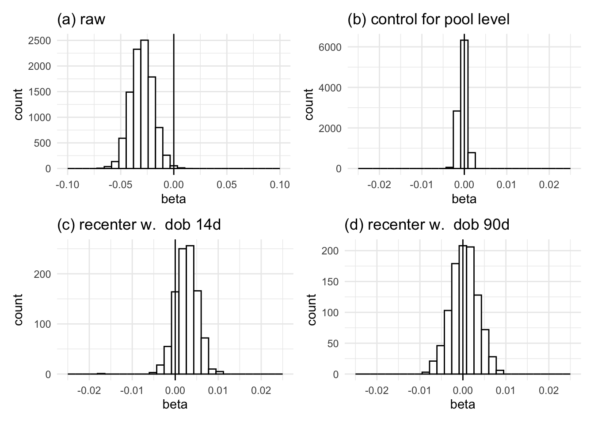
This is not as narrow as (b), and worse, it is not centered. Can we do better?